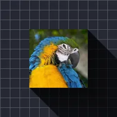

Uzun gölge

Katmanın opak kısımlarından uzun, paralel gölgeler düşürür.
Ayarlar
| Ayar | Tür | Aralık | Varsayılan |
|---|---|---|---|
| Açı | Açı | -3600° – 3600° | 45° |
| Uzunluk | Sayı | 0 – 4000 | 300 |
| Renk | Renk | – | #000000 |
| Alfa | Sayı | 0% – 100% | 60% |
| Solma | Sayı | 0% – 100% | 50% |

Katmanın opak kısımlarından uzun, paralel gölgeler düşürür.
| Ayar | Tür | Aralık | Varsayılan |
|---|---|---|---|
| Açı | Açı | -3600° – 3600° | 45° |
| Uzunluk | Sayı | 0 – 4000 | 300 |
| Renk | Renk | – | #000000 |
| Alfa | Sayı | 0% – 100% | 60% |
| Solma | Sayı | 0% – 100% | 50% |